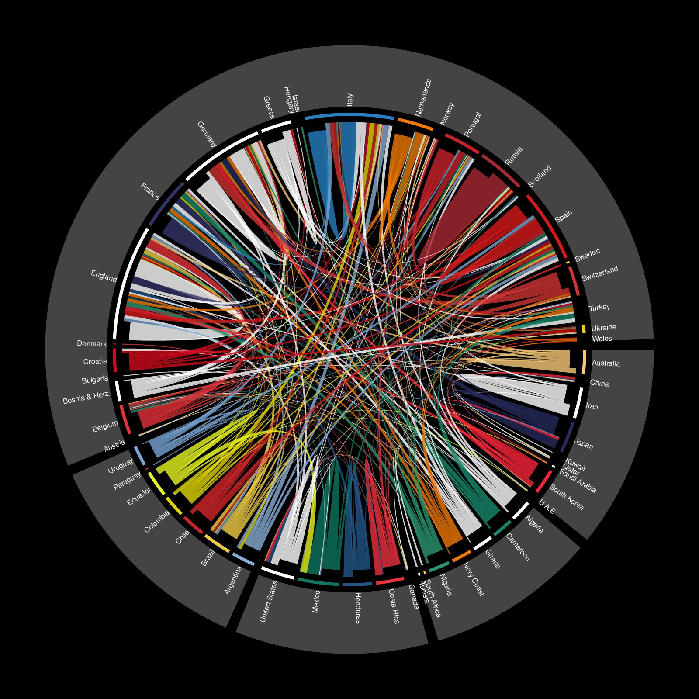

re-implement from http://gjabel.wordpress.com/2014/06/05/world-cup-players-representation-by-league-system/
files are: table.txt, iso.csv
df0 = read.table("example/table.txt", sep = "\t", header = TRUE, stringsAsFactors = FALSE, quote = "")
df1 = read.csv("example/iso.csv", stringsAsFactors=FALSE)
m = table(df0$country, df0$league)
country = union(rownames(m), colnames(m))
df1 = df1[df1$country %in% country, ]
od = order(df1$region, df1$country)
country = df1$country[od]
region = df1$region[od]
col = as.matrix(df1[od, c("r1", "g1", "b1")])
col[is.na(col)] = 0
col = rgb(col, max = 255)
names(col) = country
m = m[rownames(m) %in% country, colnames(m) %in% country]
class(m) = "matrix"
library(circlize)
# small gaps between countries and large gaps between regions
gap.degree = rep(1, length(region))
gap.degree[as.vector(cumsum(table(region)))] = 2
# color of the links are same as the players' countries
row.col = col[rownames(m)]
par(bg = "black")
circos.par(gap.degree = gap.degree)
chordDiagram(m,
annotationTrack = "grid", # labels will be plotted later
annotationTrackHeight = 0.01, # height for the annotation 'grid'
preAllocateTracks = 1, # pre allocate a track and later the sector labels will be added
directional = TRUE,
order = country, # the countries are ordered by region first then countries
grid.col = col,
row.col = row.col,
transparency = 0.2)
# since each country is a sector, we need to use `draw.sector` to add annotation grids for regions
# which go across several countries
first = tapply(country, region, function(x) x[1])
last = tapply(country, region, function(x) x[length(x)])
for(i in seq_along(first)) {
start.degree = get.cell.meta.data("cell.start.degree", sector.index = first[i], track.index = 1)
end.degree = get.cell.meta.data("cell.end.degree", sector.index = last[i], track.index = 1)
rou1 = get.cell.meta.data("cell.bottom.radius", sector.index = first[i], track.index = 1)
rou2 = get.cell.meta.data("cell.top.radius", sector.index = last[i], track.index = 1)
draw.sector(start.degree, end.degree, rou1, rou2, border = NA, col = "#444444")
}
# since default text facing in `chordDiagram` is fixed, we need to manually add text in track 1
for(si in get.all.sector.index()) {
xlim = get.cell.meta.data("xlim", sector.index = si, track.index = 1)
ylim = get.cell.meta.data("ylim", sector.index = si, track.index = 1)
circos.text(mean(xlim), ylim[1], si, facing = "clockwise", adj = c(0, 0.5),
niceFacing = TRUE, cex = 0.5, col = "white", sector.index = si, track.index = 1)
}
circos.clear()